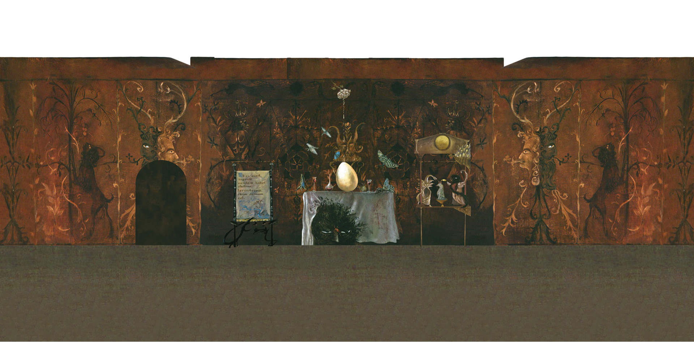

La Dama Ovale
A 2D platformer journey through the surreal world of Leonora Carrington.

La Dama Ovale is a 2D platformer game inspired by Leonora Carrington’s short story The Oval Lady, included in the book The Debutante.
The player follows the Oval Lady on a journey to save her horse friend Tartar, who has been imprisoned by a spell cast by her authoritarian father. The game reimagines the original story through an exploratory path inspired by some of Carrington’s most evocative paintings.
To escape the tragic ending of the original tale, the Oval Lady must collect stars along the way, enter a magical room and retrieve the Rose, an enchanted object that allows her to free Tartar and rise towards the celestial vault, finally gaining her freedom.